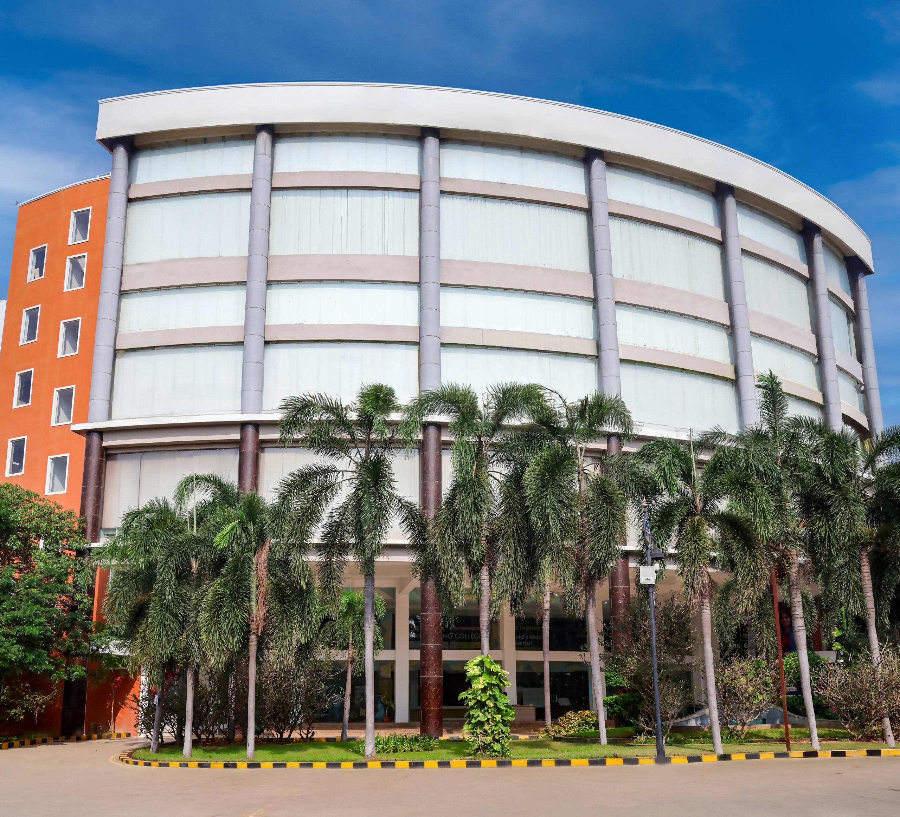

Recognized research supervisor under Anna University, Chennai.
Academic, Research, Mentoring, and Administrative experience.
Dr. C. V. Raman Achievement Award by IET UK Young Professional Section.
IoT-based device to measure Sugar level in Diabetes using Saliva.
Training & Certification Programs
From Data to Intelligent Decision-making.
Build smart AI applications with LLMs.
Design autonomous AI agents.
See, Analyze, and Build Intelligent Systems.
If you need training in Python, Machine Learning, Deep Learning, Digital Image Processing, Computer Vision, OpenCV, PyTorch feel free to contact me.
Get in TouchI am an AI researcher and academician with expertise in Deep Learning, Computer Vision, Machine Learning, Digital Image Processing, and Intelligent Systems.
I am currently serving as Associate Professor at Saveetha Engineering College, Chennai, and recognized Ph.D. Supervisor under Anna University.
Associate Professor, Saveetha Engineering College
Assistant Professor, SRM IST Ramapuram
Associate Professor, St. Joseph College of Engineering
Assistant Professor, St. Joseph College of Engineering
Ph.D. - Artificial Intelligence, Deep Learning, Image Processing, Anna University
M.E. - Computer and Communication Engineering, Sri Sai Ram Engineering College, Chennai
B.E. - Electronics and Communication Engineering, St. Xavier’s Catholic College of Engineering, Nagercoil
Subjects Taught
Research Work
International Journals
MICH-Net: A Novel Deep Learning Architecture With African Fire Hawk Optimization for Steering Angle Prediction in an Advanced Driver Assistance System
IEEE Transactions on Intelligent Transportation Systems, 2025
Quartile: Q1 | SJR: 2.608 | ABDC: A
DOI:
10.1109/TITS.2025.3623324
Multi-Modal Lung Cancer Detection Using Pyramidal Cascade Neuro-Fuzzy Fractional Network
Cancer Investigation, 2025
Quartile: Q3 | SJR: 0.495
DOI:
10.1080/07357907.2025.2520610
PMFHNet: Parallel Maxout Feed Harmonic Network for Road Anomaly Object Detection in ADAS Under Low Light Conditions
The Imaging Science Journal, 2025/2026
Quartile: Q2 | SJR: 0.321
DOI:
10.1080/13682199.2025.2599711
Elk Skill Optimizer Enabled Joint Channel Access and Energy Management Algorithm for Dynamic Channel Allocation in WSN
International Journal of Communication Systems, 2026
Quartile: Q2 | SJR: 0.419
DOI:
10.1002/dac.70421
Deep Learning-Based Energy Prediction and Tangent Search Remora Optimization-Based Secure Multi-Path Data Communication Mechanism in WSN
Network: Computation in Neural Systems, 2025
Quartile: Q4 | SJR: 0.290
DOI:
10.1080/0954898X.2024.2393750
Decentralized Control Design for UAV Swarms Communication
Discover Applied Sciences, 2025
Quartile: Q2 | SJR: 0.573
DOI:
10.1007/s42452-024-06408-w
HY-LSTM: A New Time Series Deep Learning Architecture for Estimation of Pedestrian Time to Cross in Advanced Driver Assistance System
Journal of Visual Communication and Image Representation, 2023
Quartile: Q1 | SJR: 0.573
DOI:
10.1016/j.jvcir.2023.103982
DeepDrive: A Braking Decision-Making Approach Using Optimized GAN and Deep CNN for Advanced Driver Assistance Systems
Engineering Applications of Artificial Intelligence, 2023
Quartile: Q1 | SJR: 1.782
DOI:
10.1016/j.engappai.2023.106111
RBorderNet: Rider Border Collie Optimization-Based Deep Convolutional Neural Network for Road Scene Segmentation and Road Intersection Classification
Digital Signal Processing, 2022
Quartile: Q2 | SJR: 0.704
DOI:
10.1016/j.dsp.2022.103626
Detection and Localization of Abnormalities in Surveillance Video Using Timerider-Based Neural Network
The Computer Journal, 2021
Quartile: Q2 | SJR: 0.441 | ABS: 2
DOI:
10.1093/comjnl/bxab002
DeepJoint Segmentation for the Classification of Severity-Levels of Glioma Tumour Using Multimodal MRI Images
IET Image Processing, 2020
Quartile: Q2 | SJR: 0.569
DOI:
10.1049/iet-ipr.2018.6682
Multiclassifier for Severity-Level Categorization of Glioma Tumors Using Multimodal Magnetic Resonance Imaging Brain Images
International Journal of Imaging Systems and Technology, 2020
Quartile: Q2 | SJR: 0.601
DOI:
10.1002/ima.22357
Workflow Scheduling Using Improved Moth Swarm Optimization Algorithm in Cloud Computing
Multimedia Research, 2020
Quartile: Not Available
DOI:
10.46253/j.mr.v3i3.a5
Evolutionary Intelligence for Brain Tumor Recognition from MRI Images: A Critical Study and Review
Evolutionary Intelligence, 2018
Quartile: Q1 | SJR: 0.700
DOI:
10.1007/s12065-018-0156-2
Heterogeneous Graph Convolution Cell Attention Network with Skill Optimization Based Jasmine Fragrance Detection
Book Chapter, Modeling, Simulation and Optimization: Proceedings of CoMSO 2024, 2026
Quartile: Not Applicable
DOI:
10.1007/978-981-95-4161-4_28
Detecting Early-Stage Stress Levels Using EEG and Heart Rate Monitoring with Enhanced Sparse Fire Hawk Graph Probabilistic Spiking Attention Neural Network
3rd International Conference on Intelligent Data Communication Technologies and Internet of Things, 2025
Quartile: Conference Paper
DOI:
10.1109/IDCIOT64235.2025.10915029
Improving FANET Communication with a QoS Optimized Location-Aided Routing Protocol
5th International Conference on Smart Electronics and Communication, 2024
Quartile: Conference Paper
DOI:
10.1109/ICOSEC61587.2024.10722211
Next-Generation Wearable Antenna: Optimized Multi-Band Performance for Advanced Wireless Systems and Applications
5th International Conference on Circuits, Control, Communication and Computing, 2024
Quartile: Conference Paper
DOI:
10.1109/I4C62240.2024.10748486
Design and Implementation of a Bio-Inspired Robot Arm: Machine Learning, Robot Vision
International Conference on New Frontiers in Communication, Automation, Management and Security, 2023
Quartile: Conference Paper
DOI:
10.1109/ICCAMS60113.2023.10526171
Open for collaborations, Research Partnerships, Funded Projects, Invited talks, Workshops, Student Training, and Academic Initiatives.
📞 +91 9176009797
✉️ michaelmaheshk@gmail.com
📍 Chennai, Tamil Nadu, India